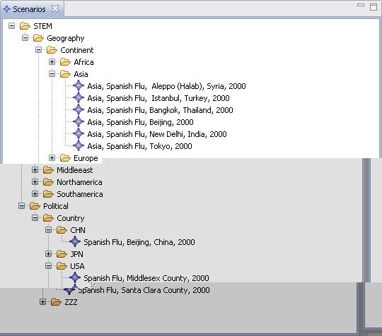

The Scenarios view displays the Scenarios that are available to start a Simulation. The available Scenarios are organized in a tree. Those listed under "STEM" are built-in to STEM.
A Simulation can be started by double-clicking on one of the listed Scenarios, or by clicking on the green triangle in the menu bar. 